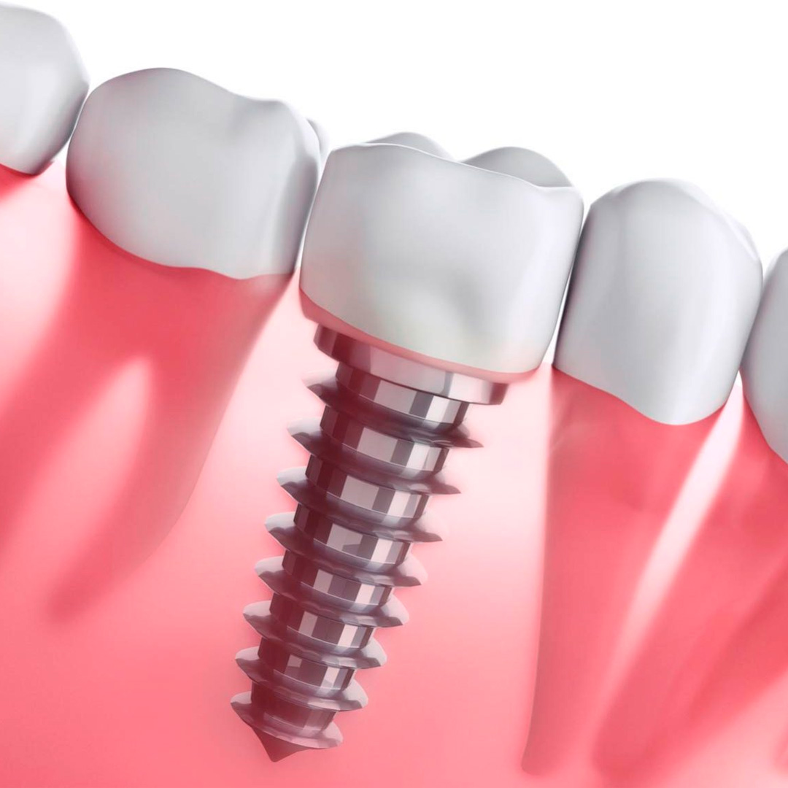

Implante dentário acima dos 60 anos: é seguro?

Uma das dúvidas mais comuns de quem chega à Oral Sin é: "Tenho mais de 60 anos, ainda posso fazer implante?" A resposta é direta — sim, e com excelentes resultados. A idade, por si só, não é um impedimento para o tratamento.
A idade não é o fator decisivo
O que determina se uma pessoa pode receber implantes não é o número no documento, e sim a saúde geral e a quantidade e qualidade do osso na região. Muitos dos nossos pacientes têm entre 60 e 85 anos e recuperam dentes fixos com total segurança.
Pacientes na maturidade estão entre os que mais se beneficiam dos implantes, porque recuperam a mastigação, a nutrição e a autoestima de uma só vez.
Quais cuidados são avaliados?
- Condições de saúde como diabetes e pressão (controladas, não impedem o tratamento)
- Quantidade de osso disponível — quando necessário, há técnicas para reconstruí-lo
- Saúde da gengiva e higiene bucal
- Medicamentos de uso contínuo
Tudo isso é analisado na avaliação, com exames de imagem que dão previsibilidade ao tratamento.
Por que vale a pena depois dos 60
- Fim da dentadura que solta e machuca
- Volta a mastigar carnes, frutas e alimentos firmes
- Melhora na fala e na digestão
- Mais autoestima para sorrir e conviver
E a recuperação?
O procedimento é feito com anestesia local e costuma ser mais tranquilo do que a maioria imagina. O pós-operatório é controlado com orientações simples e acompanhamento da nossa equipe.
Quer saber se você tem indicação para implantes? Agende uma avaliação na Oral Sin Juiz de Fora.